포트폴리오 정리본 — 사내 법인폰 화면안내서를 바탕으로, 개인정보(이름·전화번호·계정)와 내부 주소는 가렸어요. 화면의 데이터는 모두 테스트 값입니다. ← 프로젝트로 돌아가기
COWORK+ · 법인폰
법인폰 화면안내서
직원이 쓰는 안드로이드 법인폰의 통화·문자·통화 녹음·MMS 가 Cowork+ 의 상대별 법인폰 대화방에 쌓이고, 녹음은 스크립트와 AI 요약으로 이어집니다. 관리자 설정 → 법인폰 앱 → 대화방(PC · 모바일) 순서로 각 화면과 버튼을 설명합니다. 캡처 위 번호와 오른쪽 설명 번호가 짝입니다.
관리자 설정법인폰을 켜고 기기를 나눠 주는 화면
라이선스 — 법인폰 기능
설정 › 시스템 관리 › 라이선스
법인폰은 라이선스 기능입니다. 적용된 라이선스의 Feature 목록에 「법인폰」이 있어야 아래 화면들이 보입니다.
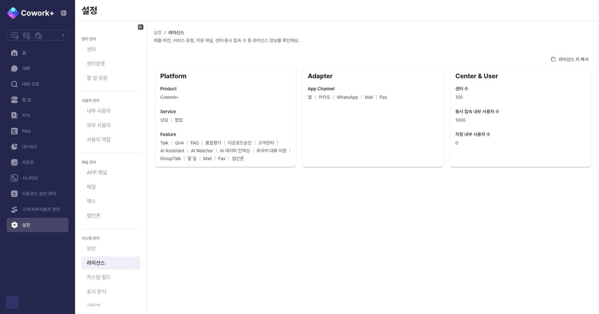
- 1법인폰 Feature 목록의 「법인폰」. 없으면 APP 채널의 법인폰 유형, 센터의 법인폰 스위치, 채널 관리 › 법인폰 메뉴가 보이지 않습니다.
APP 채널 — 법인폰 채널
설정 › 채널 관리 › APP 채널
법인폰은 APP 채널 「법인폰」 유형으로 워크스페이스에 하나만 만들고, 법인폰을 쓸 협업센터를 연결합니다.
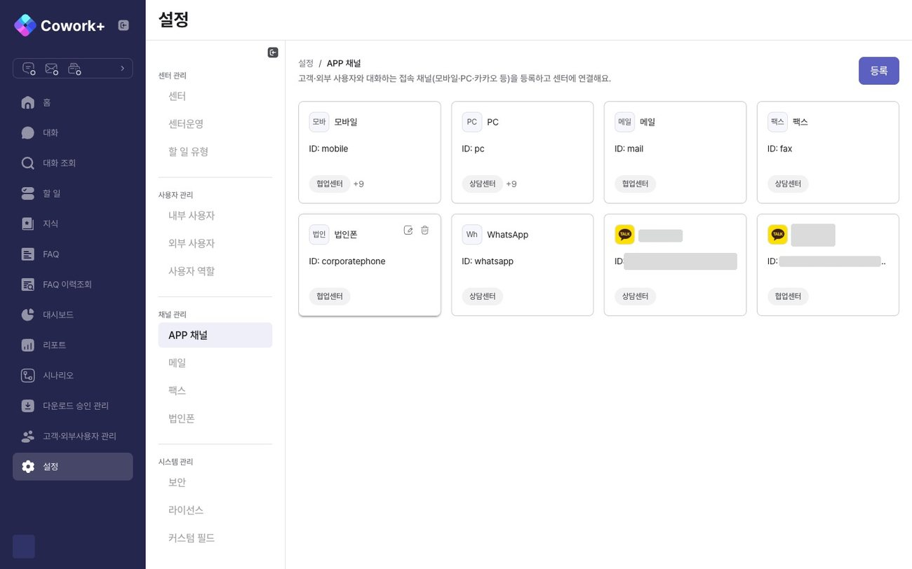
- 1법인폰 채널 ID 는
corporatephone. 아래 칩이 연결된 협업센터입니다. 연필로 연결 센터를 바꾸고, 휴지통으로 지웁니다(지워도 기존 대화방은 남음).
센터 — 법인폰 사용
설정 › 센터 관리 › 센터 › 협업센터 편집
센터별로 법인폰 수집을 켜고 끕니다. 법인폰 라이선스가 있을 때 협업센터에만 보입니다.
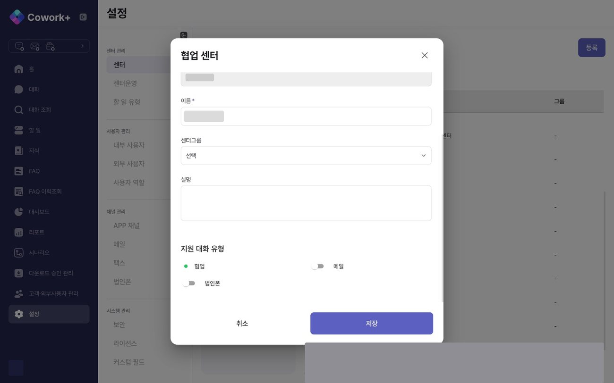
- 1법인폰 스위치 지원 대화 유형의 「법인폰」. 기본은 꺼짐. 끄면 앱이 올린 통화·문자를 서버가 받지 않고, 다시 켜면 그 뒤 건부터 수집합니다.
법인폰 — 기기 관리
설정 › 채널 관리 › 법인폰 › 기기 관리
폰을 누구에게 줬는지 등록하고, 각 폰이 잘 수집되는지 봅니다. 사용자 1명 = 폰 1대입니다.
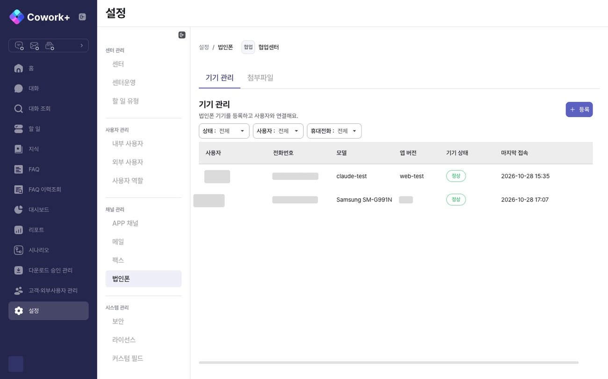
- 1법인폰 메뉴 법인폰 라이선스가 있으면 보입니다. 따로 메뉴 권한은 없습니다.
- 2탭 「기기 관리」 와 「첨부파일」(녹음·MMS 파일 형식·크기·보관 기간).
- 3등록 사용자와 전화번호를 넣어 기기를 등록합니다.
- 4필터 상태(미등록·확인 필요·정상)·사용자·휴대전화로 거릅니다.
- 5기기 상태 미등록: 앱이 아직 연결 안 함 · 확인 필요: 보고 끊김(3일)·권한 누락(필수 권한 목록은 공용 설정)·업로드 지연(24시간) · 정상.
- 6마지막 접속 앱이 5분마다 보내는 상태 보고 시각입니다.
기기 등록 창
기기 관리 › 등록
센터는 화면 위에서 고른 센터로 고정됩니다.
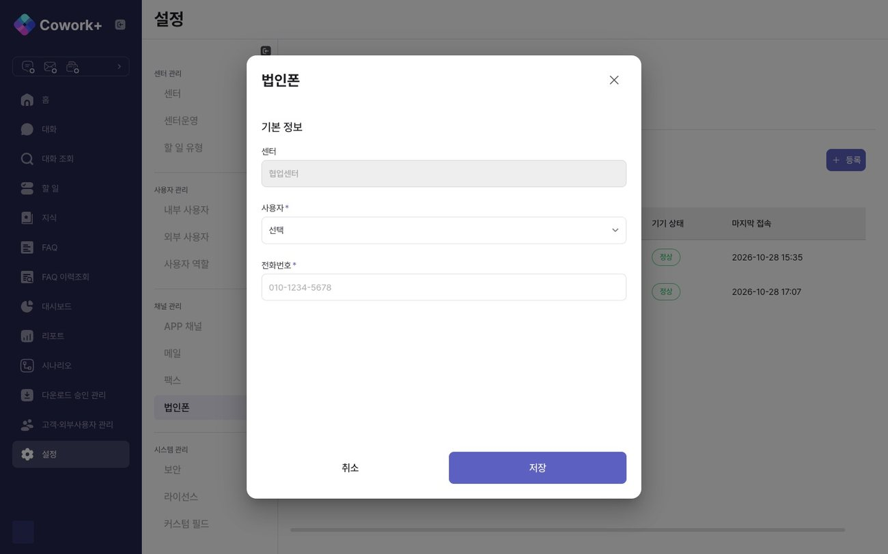
- 1사용자 그 센터 소속 사용자 중 한 명. 이미 기기가 있는 사용자는 등록할 수 없습니다.
- 2전화번호 그 폰의 번호. 같은 번호는 하나만 등록됩니다. 앱이 보고한 번호와 같아야 연결됩니다.
기기 수정 창
기기 관리 › 행 선택
위쪽 기기 정보는 앱이 보고한 값이라 읽기 전용이고, 아래 기본 정보(사용자·전화번호)만 바꿉니다.
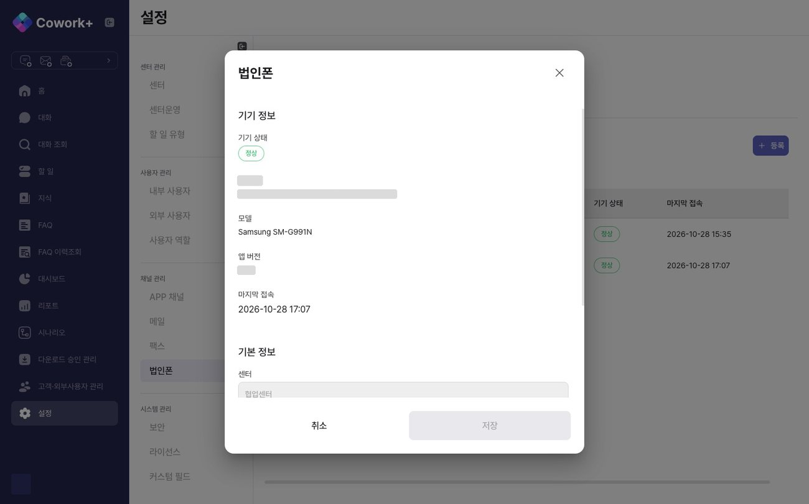
- 1기기 상태 목록과 같은 상태 배지.
- 2기기 ID 앱 설정 화면의 기기 ID 와 같습니다. 문의 때 이 값으로 기기를 찾습니다.
- 3기본 정보 사용자를 바꾸면 앱 연결 정보가 비워지고 「미등록」으로 돌아갑니다. 바뀐 사용자가 앱에 로그인하면 다시 연결됩니다.
법인폰 — 첨부파일
설정 › 채널 관리 › 법인폰 › 첨부파일
통화 녹음과 MMS 사진·동영상을 담는 버킷 설정입니다.
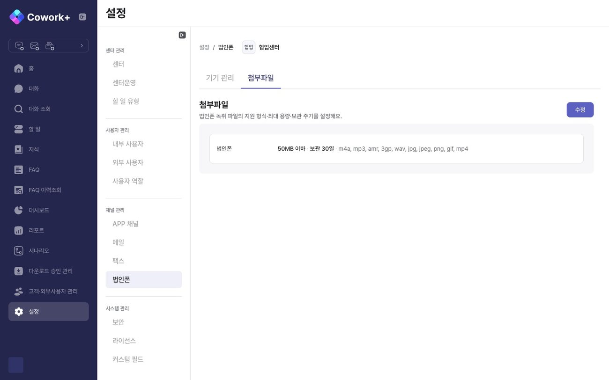
- 1현재 설정 최대 크기(기본 50MB, 50MB 까지) · 보관 기간(기본 365일, 1~3650일) · 지원 확장자. 맞지 않는 파일은 올리지 않고 「제외」로 표시합니다.
- 2수정 값을 바꿉니다. 보관 기간이 지난 파일만 매일 새벽 지워지고 기록·스크립트·요약은 남습니다.
AI — 통화 내용 요약
설정 › 센터운영 › (협업센터) › AI
AI 라이선스와 법인폰이 켜진 협업센터에 보입니다.
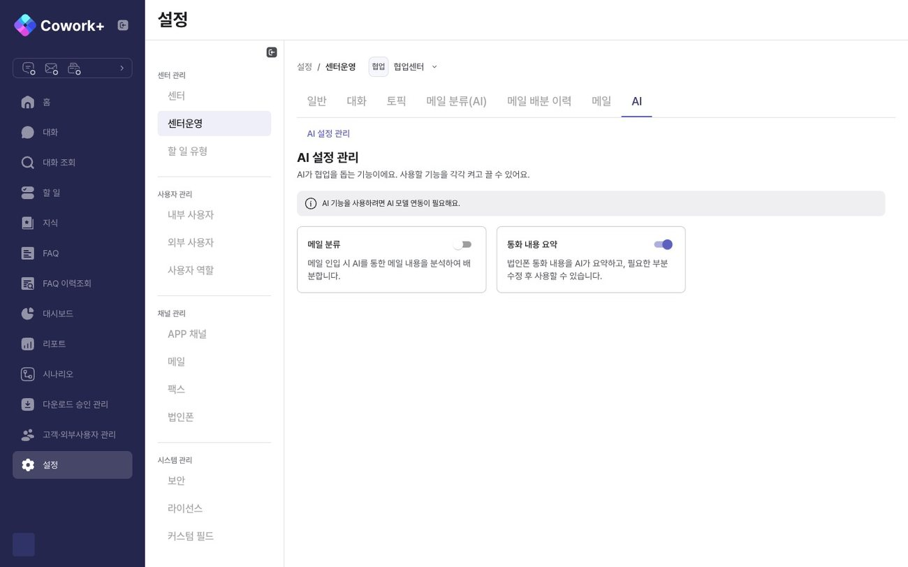
- 1통화 내용 요약 켜면 스크립트가 만들어진 통화를 AI 가 요약합니다. 기본은 꺼짐. 자동/수동(담당자 요청) 방식은 공용 설정 API 로 정합니다.
법인폰 앱직원이 폰에서 보는 화면
앱 — 처음 실행
설치 직후 · 로그인 전후
앱을 처음 열면 워크스페이스 → 권한 설정 → 로그인(화면 10) → 업무 데이터 수집 안내 순서로 진행합니다. 수집 중에는 상태바에 알림이 계속 보입니다.
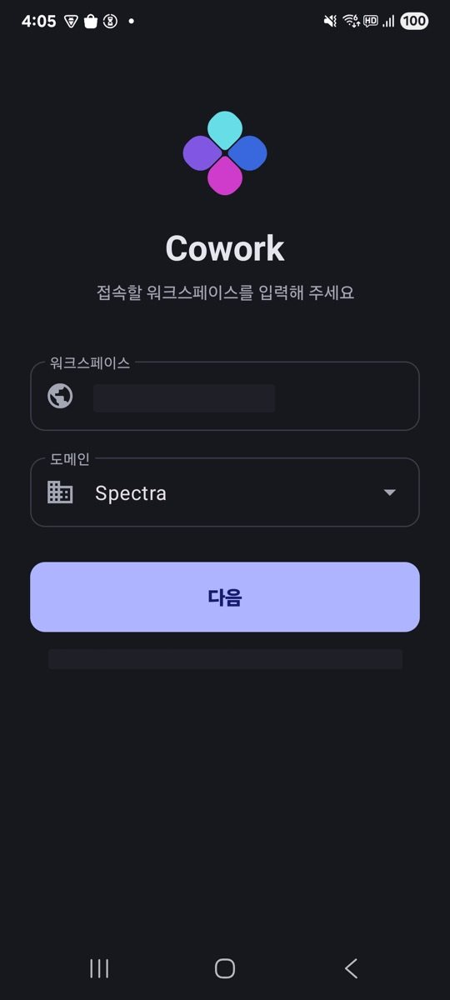
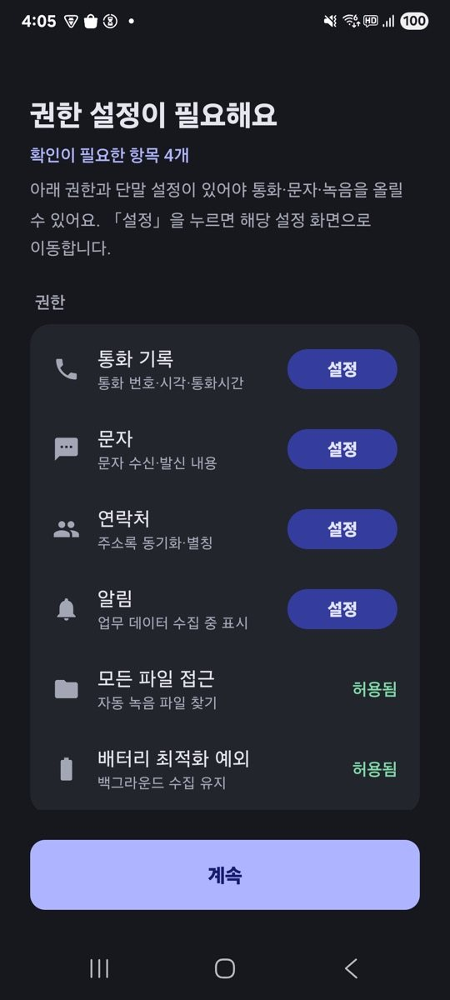
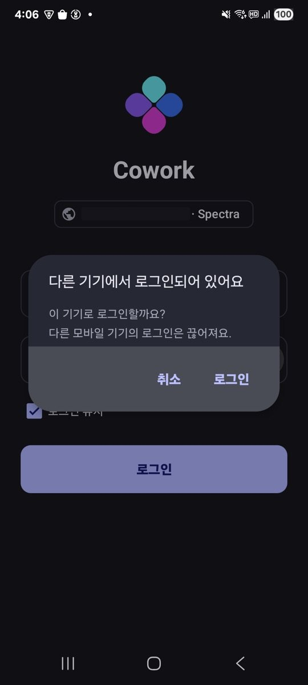
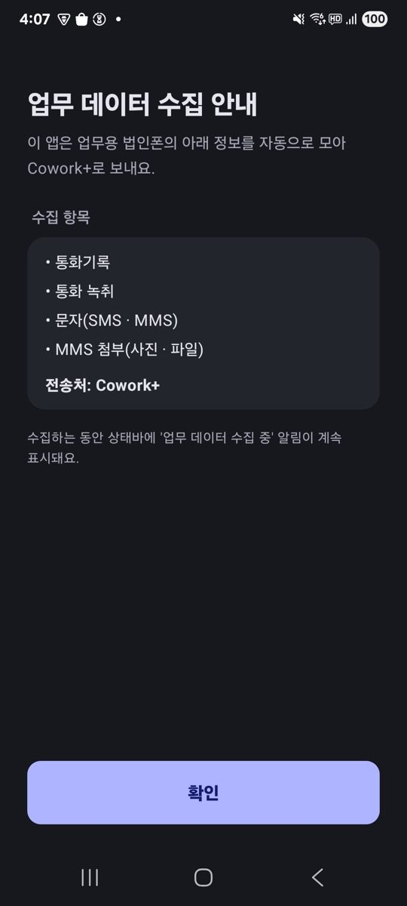
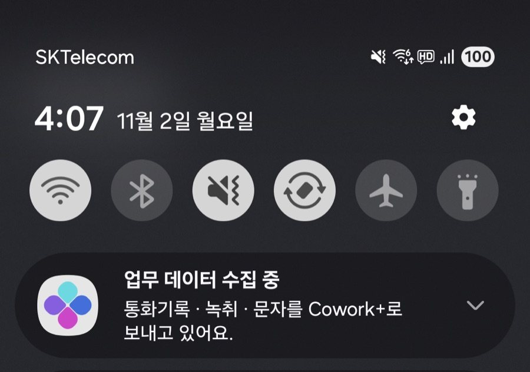
- 1워크스페이스 접속할 워크스페이스와 도메인을 정하고 「다음」. 아래에 접속 주소가 보입니다.
- 2권한 설정 통화 기록·문자·연락처·알림과 모든 파일 접근·배터리 최적화 예외. 빠진 항목마다 「설정」으로 시스템 설정을 엽니다. 다 허용하면 「계속」.
- 3다른 기기에서 로그인됨 같은 계정이 다른 모바일 기기에 로그인돼 있으면 묻습니다. 「로그인」하면 다른 모바일 기기의 로그인은 끊깁니다.
- 4업무 데이터 수집 안내 수집 항목(통화기록·통화 녹취·문자·MMS 첨부)과 전송처 Cowork+. 「확인」하면 연락 이력으로 들어갑니다.
- 5수집 중 알림 「업무 데이터 수집 중」 알림이 상태바에 계속 표시됩니다.
앱 — 로그인
법인폰 앱 첫 화면
Cowork+ 계정으로 로그인합니다. 기기는 로그인한 사용자로 정해집니다.
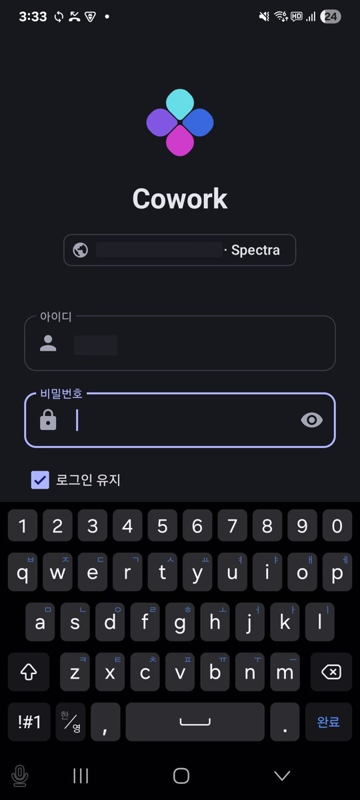
- 1워크스페이스 접속할 워크스페이스. 눌러서 바꿉니다.
- 2아이디 기기 관리에 등록된 사용자 아이디.
- 3비밀번호
- 4로그인 유지 켜 두면 앱을 다시 열어도 로그인이 유지됩니다.
앱 — 비밀번호 변경
첫 로그인
처음 로그인하는 계정이면 비밀번호를 바꾼 뒤 들어갑니다.
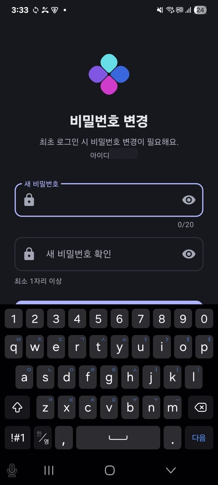
- 1새 비밀번호
- 2새 비밀번호 확인
앱 — 관리자 등록 대기 중
로그인 직후
로그인한 사용자에게 등록된 기기가 없을 때 보입니다. 이 상태에서는 아무것도 수집하지 않습니다.
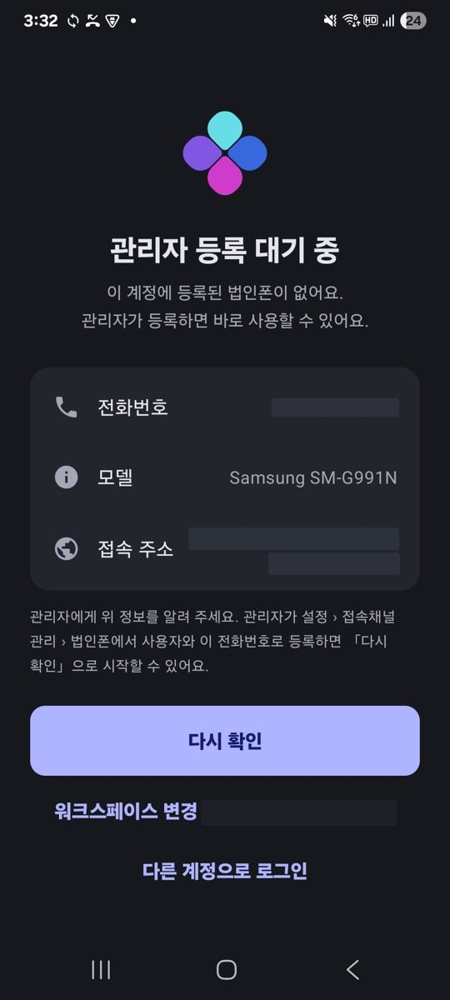
- 1안내 관리자가 등록하면 바로 쓸 수 있다는 안내.
- 2기기 정보 전화번호·모델·접속 주소. 관리자에게 이 정보를 알려 주면 됩니다.
- 3다시 확인 관리자가 등록한 뒤 누르면 메인 화면으로 들어갑니다.
- 4다른 계정으로 로그인 다른 사용자로 바꿔 로그인합니다.
앱 — 연락 이력
메인 화면
이 폰에서 수집한 통화·문자와 전송 상태입니다.
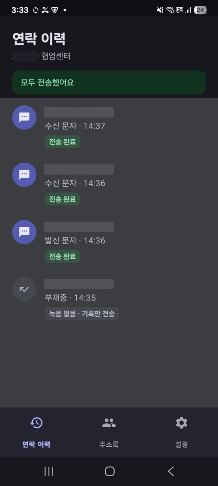
- 1사용자 · 센터 로그인한 사용자와 기기가 등록된 센터.
- 2전송 요약 모두 보냈으면 「모두 전송했어요」, 남아 있으면 대기 건수.
- 3전송 상태 전송 완료 · 업로드 대기(Wi-Fi 기다림, 「지금 보내기」 가능) · 실패(「다시 보내기」).
- 4녹음 없음 부재중·거절 통화는 기록만 올라갑니다.
- 5하단 탭 연락 이력 · 주소록(내 담당 외부 사용자) · 설정(기기 ID·권한·로그아웃).
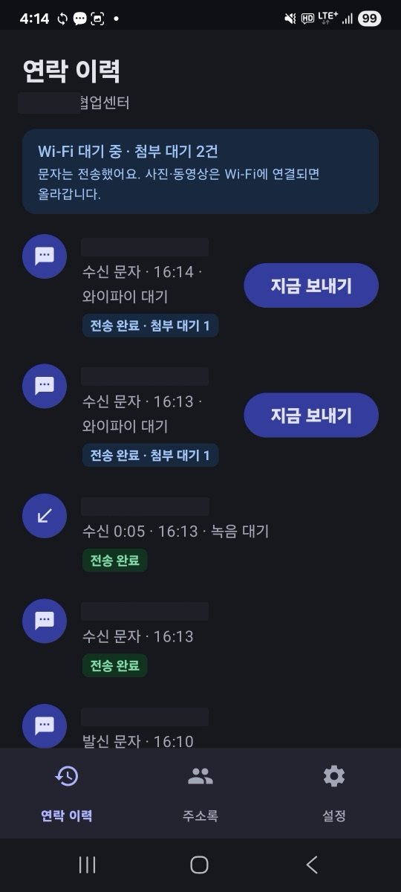
- 6Wi-Fi 대기 모바일 데이터일 때. 문자는 바로 보내고, 녹음·사진·동영상은 Wi-Fi 에 연결되면 올라갑니다.
- 7지금 보내기 Wi-Fi 를 기다리지 않고 바로 보냅니다(모바일 데이터 사용 확인 후).
앱 — 주소록 · 연락처 등록
하단 탭 › 주소록
내가 담당하는 외부 사용자(파트너) 목록입니다. 새 번호는 여기서 바로 파트너로 등록합니다.
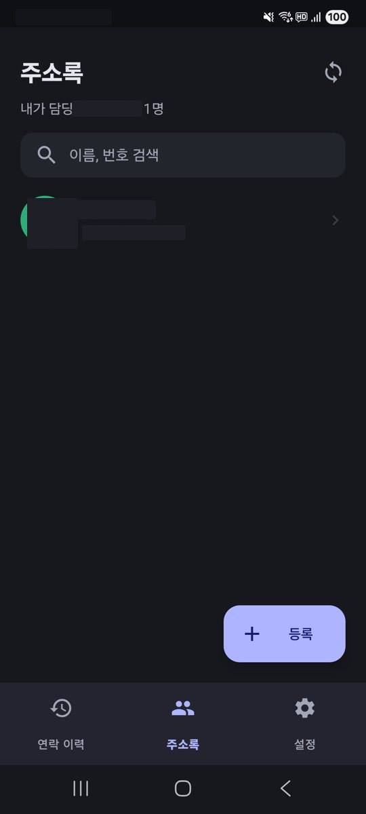
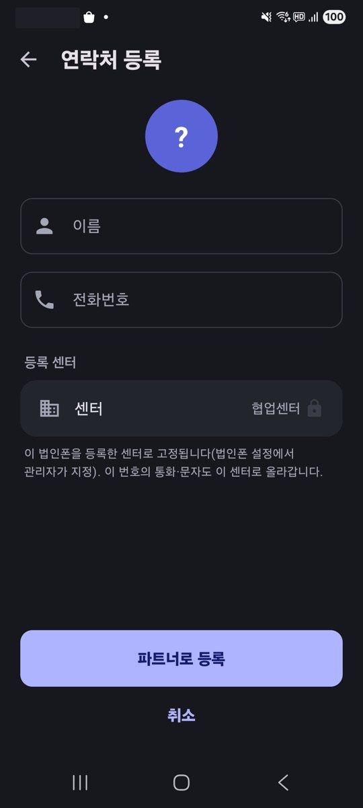
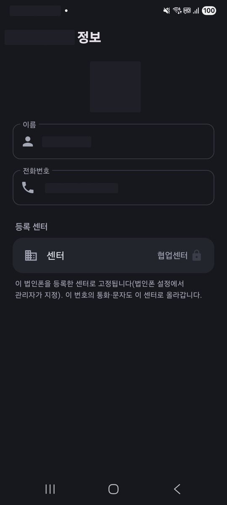
- 1별칭 동기화 폰 연락처에 저장한 이름을 내 담당 파트너의 별칭으로 맞춥니다(Wi-Fi 에서는 자동). 내 담당이 아닌 번호는 바뀌지 않습니다.
- 2검색 이름·번호로 찾습니다.
- 3파트너 누르면 파트너 정보를 봅니다.
- 4등록 연락처 등록 화면을 엽니다.
- 5등록 센터 이 법인폰을 등록한 센터로 고정됩니다(관리자가 지정). 이 번호의 통화·문자도 이 센터로 올라갑니다.
- 6파트너로 등록 이름·전화번호로 외부 사용자를 등록하고 나를 담당자로 연결합니다.
- 7파트너 정보 이름·전화번호·등록 센터를 봅니다.
앱 — 설정
하단 탭 › 설정
로그인한 사용자와 이 폰의 정보, 수집 권한 상태를 봅니다. 관리자에게 기기 정보를 알려 줄 때 이 화면을 씁니다.
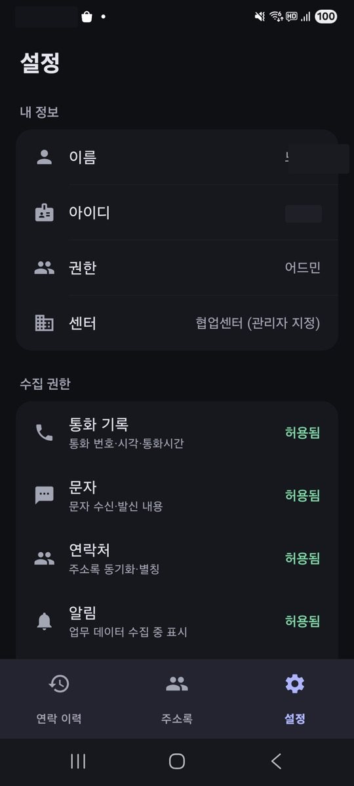
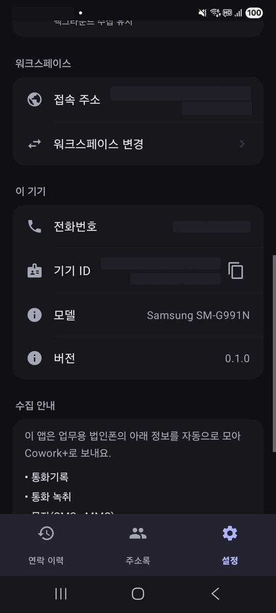
- 1내 정보 이름 · 아이디 · 권한 · 센터(관리자 지정).
- 2수집 권한 통화 기록 · 문자 · 연락처 · 알림 등의 허용 상태. 빠진 권한은 눌러 시스템 설정으로 이동합니다.
- 3워크스페이스 접속 주소와 「워크스페이스 변경」.
- 4이 기기 전화번호 · 기기 ID(복사) · 모델 · 앱 버전.
- 5수집 안내 이 앱이 모아 보내는 정보 안내.
대화 — 법인폰 대화방
대화
상대별로 통화·문자가 한 대화방에 시간순으로 쌓입니다. 화면의 문자 내용은 테스트 데이터입니다.
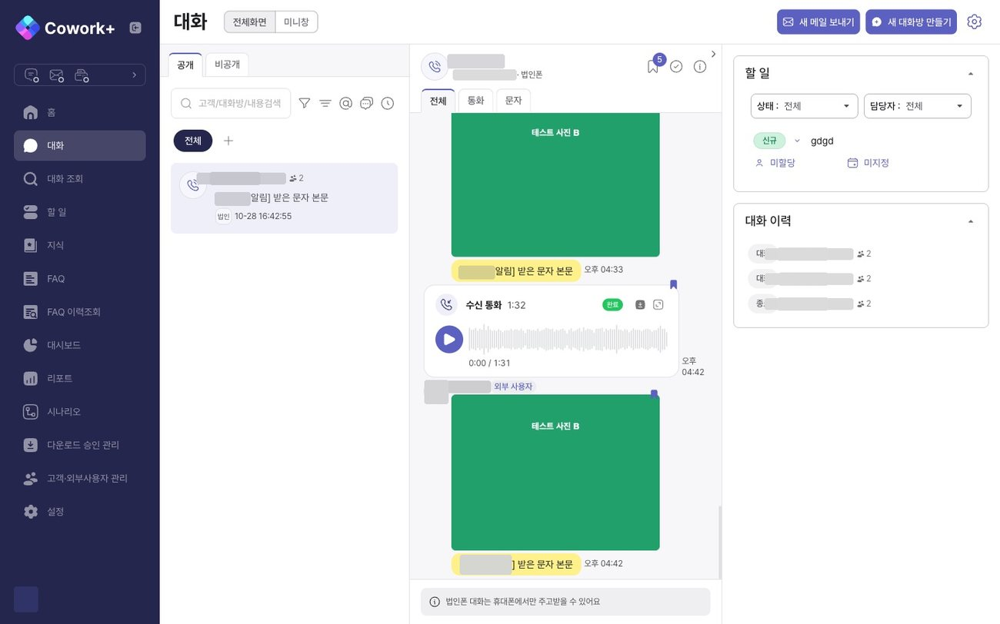
- 1대화 목록 행 법인폰 아이콘으로 구분. 미리보기는 통화면 「수신 통화」 등, 문자면 문자 내용.
- 2헤더 상대 이름 · 「번호 · 법인폰」. 책갈피·할 일·대화 정보. 「알 수 없는 사용자」면 이름 옆 연필로 바로 이름을 고칩니다. 참여자 상세의 「정보 수정」도 같은 수정 창을 엽니다(외부 사용자 수정 권한이 있을 때).
- 3탭 전체 · 통화 · 문자.
- 4통화 카드 방향·통화 시간·상태 배지와 녹음 플레이어. 크게 보기로 정보·요약·스크립트를 봅니다.
- 5문자·MMS 상대 문자는 왼쪽, 법인폰에서 보낸 문자는 오른쪽. MMS 사진은 썸네일로 붙습니다.
- 6하단 안내 법인폰 대화는 휴대폰에서만 주고받습니다(입력창 없음). 종료가 필요한 방이면 담당자에게 종료 안내가 여기 보입니다(화면 17).
- 7대화 이력 같은 상대의 이전 대화(종료된 법인폰 방·다른 채널). 누르면 그 방으로 이동.
대화 — 종료 안내
대화방 › 하단
더 이상 새 통화·문자가 들어오지 않는 등 정리가 필요한 방에서, 대화방 담당자에게만 하단에 주황색 안내와 「대화 종료」 버튼이 보입니다. 담당자가 아니거나 종료할 이유가 없으면 회색 안내 「법인폰 대화는 휴대폰에서만 주고받을 수 있어요」만 보이고 버튼은 없습니다.
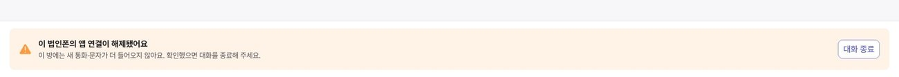
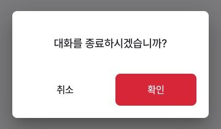
- 1종료 필요 안내 아래 중 하나라도 해당하면 보입니다.
· 이 법인폰이 다른 사용자에게 연결됨
· 이 법인폰이 기기 목록에서 삭제됨
· 이 법인폰의 앱 연결이 해제됨
· 대화 상대가 외부 사용자에서 삭제됨
기기 쪽 세 경우는 「이 방에는 새 통화·문자가 더 들어오지 않아요」, 상대 삭제는 「새 연락은 계속 이 방에 '알 수 없는 사용자'로 들어와요」라고 설명합니다. 기기 쪽 이유와 상대 삭제가 겹치면 제목 한 줄로 합쳐 보입니다(예: 「이 법인폰의 앱 연결이 해제되고, 대화 상대도 외부 사용자에서 삭제됐어요」). - 2대화 종료 누르면 확인 창이 뜹니다.
- 3확인 대화가 종료되고 「티켓이 종료되었습니다.」 알림이 뜹니다. 종료된 방은 같은 상대의 대화 이력에 「종료」로 남고, 하단에는 회색 안내만 보입니다.
대화 — 외부 사용자 이름 수정
법인폰 대화방 › 헤더 연필
등록되지 않은 번호와의 방은 「알 수 없는 사용자」로 보입니다. 이름 옆 연필로 이름을 바로 고칩니다(외부 사용자 수정 권한이 있을 때). 참여자 상세의 「정보 수정」도 같은 창을 엽니다.
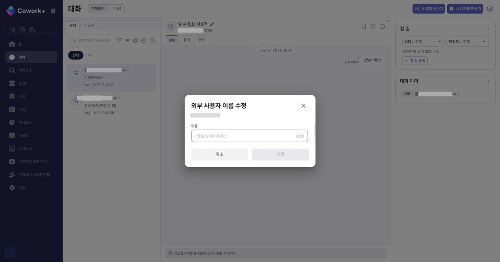
- 1연필 「알 수 없는 사용자」 이름 옆에 보입니다.
- 2이름 상대 번호가 함께 보이고, 이름은 20자까지.
- 3저장 외부 사용자 정보의 이름이 바뀌어 헤더에 바로 보이고, 「알 수 없는 사용자」 표시와 연필이 사라집니다. 대화방 이름(목록)은 그대로입니다.
대화 — 통화 탭
대화방 › 통화
통화만 모아 봅니다. 카드 상태는 업로드 대기 → 변환중 → 요약중 → 완료 순서로 바뀝니다.
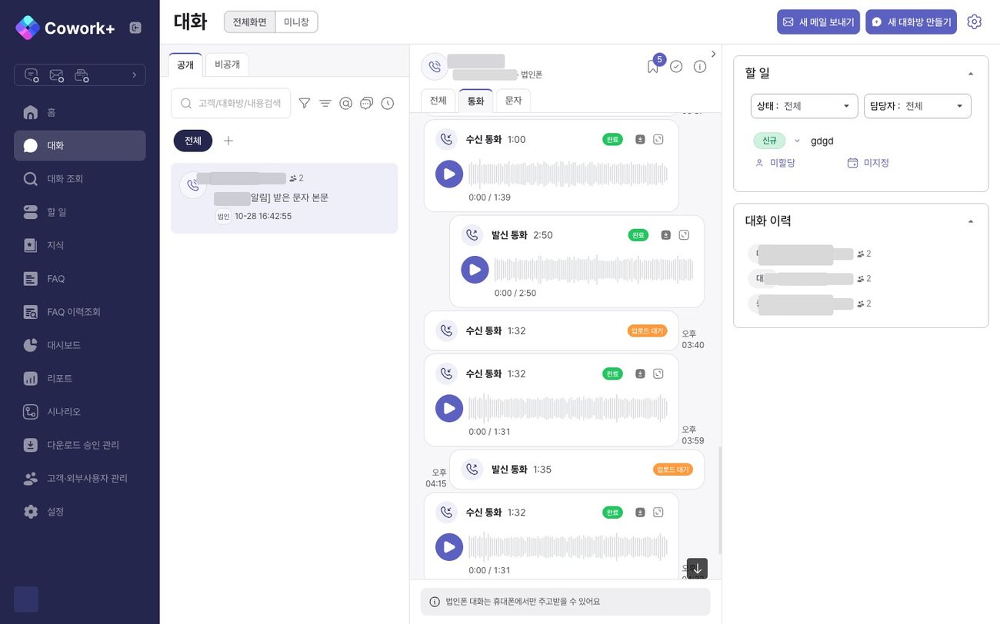
- 1완료 녹음·스크립트·요약이 끝난 통화.
- 2업로드 대기 녹음 파일이 아직 폰에 있습니다. 폰이 Wi-Fi 에 연결되면 올라옵니다.
- 3재생 재생/정지, 파형을 눌러 이동.
- 4다운로드 · 크게 보기 녹음 내려받기와 크게 보기 창.
통화 크게 보기 — 정보
통화 카드 › 크게 보기 › 정보
통화 정보와 AI 통화 요약을 봅니다.
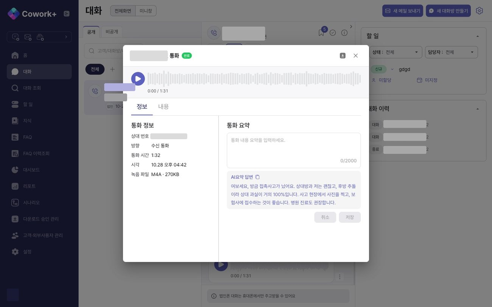
- 1플레이어 재생 위치·길이. 방향키로도 이동합니다.
- 2탭 정보 · 내용(스크립트).
- 3통화 정보 상대 번호 · 방향 · 통화 시간 · 시각 · 녹음 파일.
- 4통화 요약 입력 대화방 담당자만 고칠 수 있습니다(2000자까지). 고치면 「수정됨 · 이름 · 시각」이 표시됩니다.
- 5AI 요약 답변 AI 가 만든 요약. 복사해서 입력칸에 쓸 수 있습니다.
통화 크게 보기 — 내용
통화 카드 › 크게 보기 › 내용
녹음을 글로 바꾼 스크립트입니다. 외부 전사 엔진이 만듭니다.
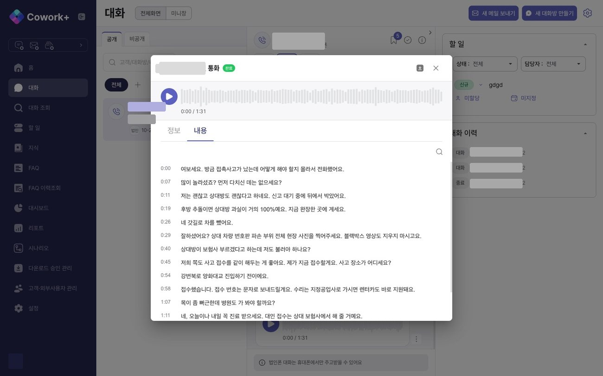
- 1내용 탭
- 2검색 이 통화 안에서 찾습니다.
- 3발화별 시각 줄을 누르면 그 지점부터 재생합니다.
대화 조회 — 법인폰 대화
대화 조회 › 대화
관리자가 법인폰 대화를 조회합니다. 상세는 대화방과 같은 모양(헤더·탭·통화 카드·문자)이고 읽기 전용입니다.
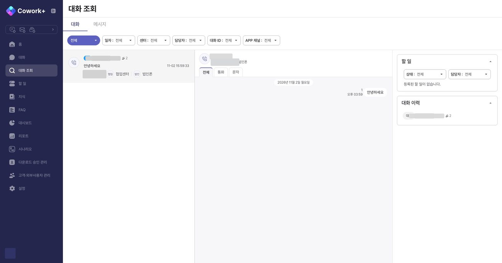
- 1목록 행 법인폰 아이콘과 담당자 · 센터 · 「법인폰」 채널.
- 2헤더 상대 이름과 「번호 · 법인폰」.
- 3탭 전체 · 통화 · 문자.
- 4할 일 · 대화 이력 이 대화의 할 일과 같은 상대의 이전 대화.
모바일 워크스페이스 — 법인폰
Cowork+ 모바일 › 대화
모바일 워크스페이스에서도 법인폰 방과 통화·문자를 PC 와 같은 모양으로 봅니다. 입력창은 없습니다.
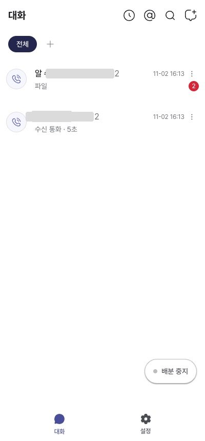
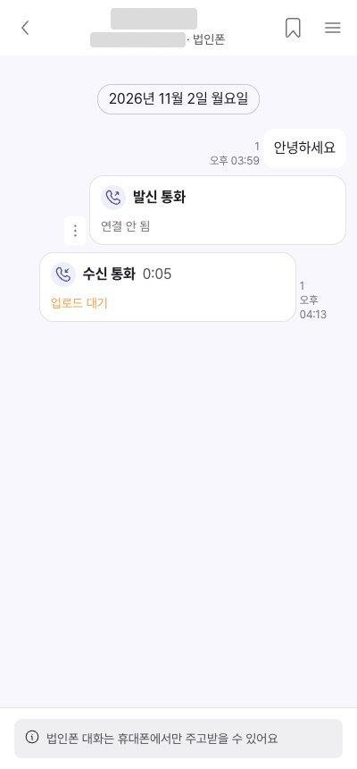
- 1법인폰 방 법인폰 아이콘으로 구분합니다.
- 2미리보기 통화면 「수신 통화 · 5초」, 문자면 내용.
- 3헤더 상대 이름과 「번호 · 법인폰」.
- 4통화 카드 방향 · 통화 시간 · 상태(업로드 대기 등). 녹음이 올라오면 재생 · 스크립트 · 요약이 붙습니다.
- 5하단 안내 법인폰 대화는 휴대폰에서만 주고받습니다.
설정 순서와 서버 구성은 사내 설정 가이드를 함께 봅니다. 공용 설정(미등록 번호 정책·전사 방식·AI 요약 자동/수동·기기 상태 기준·필수 권한 목록)은 화면이 없고 API 로 바꿉니다.